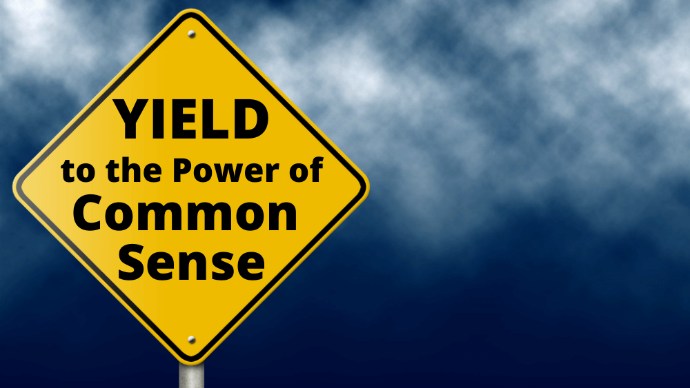

Question Of The Week: Safer Internet Day
This year, Safer Internet Day was on February 6th. The goal of this day is
to raise awareness about the importance of staying safe online. Safer
internet day was originally an initiative started by the European Union,
but it has since grown to be celebrated in over 180 countries.
In honor of this day, I wanted to share some tips on how to stay safe
online:
- Use a password manager
-
Using a password manager is a very important aspect of safe internet
use. A password manager is a tool that stores all of your passwords in
one place. The reason why this is important is that it helps you more
easily use a different password on every site, which is extremely
important. This is because if a hacker gets ahold of one of your
passwords, they could potentially have access to all of your accounts.
Using a password manager can help prevent this from happening as it is
able to generate and store complex passwords for you, so if one
account gets compromised, the hacker will not be able to access your
other accounts.
-
There are many different password managers out there, but some of the
most popular ones include
Lastpass,
1Password, and
Dashlane.
-
Personally, I use Lastpass and have found it to be very helpful and
find is very useful in keeping my accounts safe and I would recommend
it to anyone looking for a password manager.
-
Here is a video with additional information on the importance of
password managers:
- Use an Anti Virus
-
Using an antivirus is another important step in keeping yourself safe
on the internet. Even if you are careful online, it is still possible
to get a virus on your computer. For example, an application that you
have previously installed could have a vulnerability that a hacker
could exploit. An antivirus can help prevent this from happening by
scanning your computer for known viruses and malware as well as
detecting malicious actions by applications that have been
compromised.
-
Some of the popular antivirus programs are
McAfee, Norton, and
Bitdefender. However, if
you are using a Windows computer, you may already have Microsoft
Defender installed, which is a free antivirus that comes with Windows.
You are also able to use Microsoft Defender on your Mac and on your
Phone if you have a Microsoft 365 subscription. You can find more
information about Microsoft Defender
here.
-
Personally, I use Microsoft Defender on my Mac and have not have any
issues with it. If you already have a Microsoft 365 subscription, I
would recommend it.
- Use an RFID blocking wallet
-
While not really internet safety, some say it is important to use an
RFID blocking wallet. The reason why this is important in that the
technology that allows you to tap your card to pay, RFID, could be
exploited by a hacker by using an RFID reader to duplicate your card.
An RFID blocking wallet is able to stop this by blocking the signals
from your card.
-
This issue has also been disputed however, for example in a
2017 New York Times
article, the author said that while there is no harm in using an RFID wallet
for piece of mind, RFID theft is not a large threat. In a
2019 article by digitaltrends, Roger Grimes of
KnowBe4, a company that provides security
awareness training, "You shouldn't
spend one cent. There has still to this day not been a report of a
single real-world crime that an RFID blocking product would have
stopped."
-
If you are still interested in getting an RFID blocking wallet for
piece of mind here popular options are the
The Ridge Wallet
and
Vulkit.
You can also get RFID blocking cards to put in your existing wallet,
like this
one.
-
I personally do have an RFID blocking wallet, but with the new
information I have found, I am not sure if I would specifically seek
one out.
- Don't overshare online
-
It is important be cautious about what you share online. For example,
if you post a picture of your new home for example, a hacker may be
able to find you address which they can then use against you. If a
hacker is able to gather enough information about you, they may be
able to use it to get a sim card with your phone number, which they
can then use to access things like two factor authentication, which
many companies use to make sure you are accessing your accounts,
including many banks. They may also be able to get enough information
about you to answer security questions that you have set up which
usually are able to be used to reset account passwords.
-
I always try to think before I post things online and make sure that I
am not sharing too much personal information. The website
Kidscape.org.uk
has nine questions that you should ask before posting which are:
- Will I feel good or different about it later?
- Why am I posting?
- Would I say this in person?
- Can this be interpreted differently?
- Am I being kind?
- Is it really private?
- Do I have permission?
- Would I like me?
- Is it legal?
- Update your software
-
It is important to ensure that the software and operating system
remain up-to-date on your computer. Whenever Microsoft, Apple, or any
other company puts out an update for your device, they have often
fixed many vulnerabilities that you device has. By not updating your
devices, you are leaving these vulnerabilities wide open for hackers
to exploit.
-
I always try to keep my devices up to date by using things like the
automatic update features that many devices have. If a device dosen't
have that feature, I will try and update whenever I am prompted to.
-
Here is a video with additional information on the importance of
updating your software:
- Avoid the use of Public WiFi
-
While Public WiFi is convenient, it is also something that hackers can
use against you. While you are on Public WiFi, any information that is
sent to a website that does not have the little padlock in the top
left corner of your browser can be easily spied upon by a hacker. Even
on sites that do use the padlock, a hacker may be able to create a
fake WiFi network that could trick you or your device into connecting
to it, which would then allow them to spy on everything you do.
Whenever you do connect to Public WiFi, you should use a Virtual
Private Network or VPN, which encrypts all your data which would
prevent a hacker from being able to spy on you.
-
Some popular VPNs include:
NordVPN,
ExpressVPN,
and
Private Internet Access.
-
I personally do not use a VPN, but I am now considering getting one
after learning how much risk there is in using Public WiFi.
-
Here is a video with more information about what precautions should be
taken when using public WiFi:
- Common sense
-
Arguably the most important part of staying safe online is to use
common sense. Be careful when opening up links, especially in emails,
as they could be things like phishing scams, be cautious of sketchy
downloads as they could infect your computer with malware, and keep up
to date on new techniques that hackers are using in order to make sure
that when you encounter them, you know what to do.
-
Remember that if something seems too good to be true, it probably is.
